주택 경매 없이 가능할까?
주택담보대출이 있어도 시세, 담보잔액, 연체 여부를 기준으로 경매 위험과 회생 가능성을 함께 검토합니다.
개인회생 · 도산 전문 · 의정종합법률사무소
10년간 4,000명 이상의 개인회생 사례를 바탕으로
주택 경매 위험, 면책 후 재회생, 배우자 모르게, 도박·주식·코인 빚까지
도산 전문 변호사가 직접 사안별로 가능한 방향을 검토합니다.
국가 법원이 마련한
공적 회생제도입니다
자신의 소득으로 감당하기 어려운 채무를 법원 절차에 따라 조정하고,
다시 경제생활을 시작할 수 있도록 돕는 제도입니다.
현재 소득 기준으로 다시 설계할 수 있습니다
핵심은 ‘빚이 얼마나 많냐’보다
현재 소득으로 얼마를 현실적으로 갚을 수 있느냐입니다.
개인회생은 채무금액만 보는 절차가 아니라,
소득, 재산, 부양가족, 생활비, 채무 발생 원인을 종합해 변제 방향을 검토하는 제도입니다.
※ 실제 변제금은 소득, 재산, 부양가족, 채무 발생 원인, 법원 판단에 따라 달라질 수 있습니다.
채무금액, 월 소득, 재산, 부양가족,
최근 대출 여부를 먼저 확인합니다.
현재 소득과 생활비를 기준으로
매달 납부 가능한 변제방향을 검토합니다.
변제 계획에 따라 일정 기간 납부하고,
남은 채무는 면책 가능성을 검토합니다.
개인회생은 복잡하고 어려울 것 같아서, 또는 내 상황은 안 될 것 같아서
상담을 미루는 경우가 많습니다.
이름, 연락처, 채무금액,
월 소득만으로 먼저
가능성을 확인합니다.
방문이 어려워도
전화·카톡으로 현재 상황을
설명할 수 있습니다.
진행이 필요한 경우에만
필요한 서류를
순서대로 안내합니다.
지금은 모든 서류를 준비하는 단계가 아니라,
내 상황이 가능한지 먼저 확인하는 단계입니다.
주택담보, 최근대출, 재회생, 배우자 모르게, 도박·주식·코인 빚까지
다양한 사안의 상담과 접수가 실시간으로 이어지고 있습니다.
채무금액, 소득, 재산, 부양가족 기준으로
개인회생 가능성과 예상 변제 방향을 먼저 확인합니다.
채무금액 구간을 선택해 주세요.
※ 정확한 결과는 변호사 검토 후 안내됩니다.
주택담보대출이 있어도 시세, 담보잔액, 연체 여부를 기준으로 경매 위험과 회생 가능성을 함께 검토합니다.
가족에게 알릴 수 없어 상담을 미루는 분들을 위해 비밀 상담과 절차상 체크포인트를 먼저 안내합니다.
과거 면책 이력이 있어도 기간, 사유, 현재 상황을 종합적으로 검토합니다.
무조건 포기하기보다 채무 발생 원인과 변제 계획을 함께 살펴보는 것이 중요합니다.
같은 채무금액이라도 소득, 재산, 부양가족, 채무 발생 원인에 따라 결과는 달라집니다.
의정은 실제 사례 데이터를 바탕으로 상담 방향을 안내합니다.

의정종합법률사무소 오재길 대표변호사
10년간 4,000명 이상의 개인회생 사례를 바탕으로
채무자의 상황에 맞는 방향을 검토해왔습니다.
지금 필요한 건 모든 서류를 준비하는 것이 아니라,
내 상황이 개인회생으로 정리될 수 있는지 먼저 확인하는 것입니다.